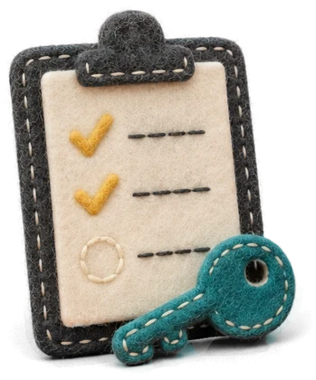
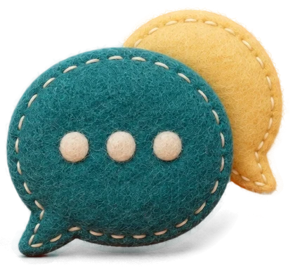
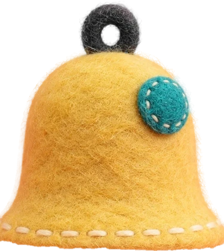

「2027~2028년 광역형 비자 사업」 사회통합·지역정착 지원 협력 제안
정착 동행 시범 — 운영 방식과 정착 지표
참고 자료(협력 제안서 붙임)
0신청서에 옮기실 다섯 줄
| 과제명 | 광역형 비자 외국인 첫 30일 정착 동행 |
| 운영 | SYNK PATH(2027년 1월 법인 설립 예정) — 대학·시군 외국인지원센터·「외국인 유학생 통합지원체계」와 연계(협의 예정) |
| 대상·규모 | 전북 소재 대학의 광역형 비자 유학생과 전환 예정자 30~50명 |
| 일정 | 2027년 1~2월 준비, 3~8월 운영, 9월 결과 보고 |
| 예산·성과 | 2027년 시범은 도 예산 0원(SYNK 부담), 2028년 운영은 도의 정식 절차로 따로 협의. 정착 지표는 분기마다 집계로 보고 |
1무엇을 보태나 — 알려 주는 일은 기존 기관이, 끝까지 확인하는 일은 정착 동행이
2한 사람의 여정 — 언제 무엇을 하나
| 시기 | 하는 일 | 함께할 곳 |
|---|---|---|
| 입국 전 | 해외에서 들어오는 사람(E-7 선발자, 일반 D-2로 입학해 광역형 전환을 준비할 학생)에게 온라인 생활·법 교육(시간제취업 규칙, 「택배만 받아 주면 큰돈」처럼 범죄로 끌어들이는 아르바이트 주의 포함), 한국어 단계 확인, 서류·비용 설명 | 도의 선발·추천 절차 |
| 첫 72시간 | 쉬운 한국어 오리엔테이션 — 생활 규칙·법·노동권·긴급 연락. 휴대폰·교통 안내 | 대학 국제처 |
| 첫 30일 | 외국인등록·계좌 개설·건강보험료 납부를 안내하고 필요하면 함께 갑니다. 30일 안에 끝났는지 한 사람씩 확인하고, 숙소 계약 내용을 쉽게 설명하고, 첫 함께하는 자리에 초대합니다. 공고의 경과 규정으로 시범 입학생의 시간제 취업 조건이 바뀔 수 있어, 도·법무부가 확정하는 내용을 개인별로 알립니다 | 시·군 외국인지원센터, 대학 |
| 첫 90일 | 주 1회 → 월 1회 확인, 사회통합프로그램 등록 안내, 함께하는 자리에 꾸준히 참여 | 사회통합프로그램 운영기관 |
| 학기 중 | 월 1회 확인(앱 + 사람). 연락 끊김·임금·집·학업 같은 신호를 살피고, 취업 준비와 가족 정착 안내를 합니다 | 대학, 도·시군 |
| 졸업·전환 | 구직·체류자격 전환 준비와 기한 알림. 서류 작성·제출은 등록 행정사에게 연결합니다 | 도·대학의 취업 지원 |
3프로그램별 운영 방식
- 첫 응답과 연결 — 한국 전담 매니저 1명과 AI 다국어 1차 응답(24시간)이 함께 맡습니다. 사람은 평일 24시간 안에 답하고, 위험 신호는 AI가 판단하지 않고 사람이 확인합니다. 비자·행정·법률 상담이 필요한 일은 「외국인 유학생 통합지원체계」·시군 외국인지원센터 같은 기존 창구로 바로 잇습니다.
- 할 일·기한 알림 — 외국인등록·건강보험료 납부·체류 기간 같은 할 일과 기한을 앱으로 알리고, 끝났는지는 본인이 표시합니다.
- 한국어·사회통합 동행 — 온라인 TOPIK 준비(SYNK WORLD)로 진도를 돕고, 사회통합프로그램 등록을 안내해 도내 운영기관에 연결합니다.
- 취업 준비 — 이력서 점검과 면접 연습을 하고, 도·대학의 인턴십·현장실습 참여를 돕습니다. 직접 알선은 하지 않습니다.
- 가족 정착 안내 — 보육·학교 진학 절차를 안내해 교육지원청·가족센터에 연결하고, 배우자의 한국어·취업 준비를 안내합니다.
- 함께하는 자리 — 유학생과 한국인 학생·주민이 한 팀으로 섞여 뛰는 시즌 리그(풋살 등, 격주)와 요리·언어 교환 모임입니다.
- 순위표와 시즌 우승을 두고, 팀은 시즌마다 다시 섞습니다. 대학 동아리·동네 동호회와 함께 열어 한국인도 자기 모임으로 옵니다.
- 세계인 축제·축구대회 같은 큰 행사 사이를 잇는 정기 모임이라, 격식 있는 순서 없이 바로 경기와 식사로 시작합니다. 모임 뒤 식사에는 술을 두지 않습니다.
- 먼저 자리 잡은 선배 유학생(또래 리더 — 가능하면 같은 나라 출신)이 생활 고민을 듣고, 필요하면 매니저와 전문 상담 기관에 연결합니다. 또래 리더는 비밀 유지 서약을 합니다.
- 성과는 참석 인원이 아니라 다시 온 비율과 한국인 참여 비율로 잽니다.
4앱 화면 시안 — 학생과 매니저가 보는 화면
참여 학생과 매니저가 쓰는 앱의 화면 시안입니다. 화면 속 이름·숫자·일정은 예시이며, 실제 화면은 시범 전에 참여 학생과 함께 다듬습니다.
08:30
PATH정착 동행한국어 · Монгол
DAY 07 / 30

첫 30일2끝남
2오늘
23남은 날
01오늘
- 외국인등록 신청오전 10시 · 매니저가 같이 가요
- 계좌 개설오후 · 여권으로 여는 은행을 찾아 뒀어요
02다음
- 건강보험료 자동이체30일까지 · 외국인등록 뒤 고지서가 와요
끝났다고 표시하기
할 일
상담
모임
나
19:42
PATH상담한국어 · Монгол
AI + MANAGER

상담AI가 먼저 답하고, 확인이 필요한 일은 매니저가 이어받아요
토요일에 식당 아르바이트를 해도 돼요?
AI · 바로 답
시간제 취업은 허가를 먼저 받아야 해요. 일할 수 있는 시간은 학생마다 달라서 매니저가 확인해 드릴게요.몽골어로 보기
매니저에게 넘겼어요 · 평일 24시간 안에 답해요
매니저
통합지원체계 상담 창구로 연결해 드릴게요. 월요일 오후 2시 괜찮아요?좋아요다른 시간
이 대화를 읽는 사람은 담당 매니저뿐이에요
메시지 쓰기
12:10
PATH함께하는 자리한국어 · Монгол
SEASON 1 · WEEK 03풋살참석 12명
토요일 오후 5시
대학 체육관 · 경기 뒤 같이 저녁
초록 조끼 팀민바서린준투
한국인 학생 3 · 유학생 3
01순위
- 1초록 조끼 · 우리 팀9점
- 2노랑 조끼7점
- 3파랑 조끼4점
팀은 시즌마다 다시 섞어요
참석할게요
할 일
상담
모임
나
PATH매니저 화면COHORT 2027-1 · 38누가 열어 봤는지 기록이 남아요
WEEK 03 · MON

먼저 볼 사람 3오늘01먼저 볼 사람
- 바** · 학부 1학년15일째 확인 무응답 · 지난 연락은 대화방연락하기
- 응** · 대학원 1학기임금이 덜 들어왔다는 상담 · AI가 넘김 · 1345 안내 전상담 열기
- 도** · 학부 1학년첫 30일 안 외국인등록 · 3일 남음 · 동행 필요일정 잡기
02이번 주
29 / 38첫 30일 필수 행정 끝남
9건AI가 사람에게 넘긴 상담
24명모임 참석 · 한국인 8
6시간사람 첫 응답(중앙값)
도·대학에는 이름 없이 이 숫자만 분기마다 가요
5한 학생의 첫 30일 — 가상 사례
실제 인물이 아니라, 정착 동행이 어떻게 돌아가는지 보이려고 만든 예시입니다.
| 입국 2주 전 | 참여에 동의하면 앱에 할 일 목록이 생기고(외국인등록 예약, 숙소 계약서 확인), 매니저가 같은 학교 선배인 또래 리더를 대화방에서 소개합니다. |
| 1일 | 숙소에 들어가 쉬운 한국어 오리엔테이션을 받습니다 — 생활 규칙, 긴급 연락, 「택배만 받아 주면 큰돈」 같은 아르바이트 주의. |
| 7일 | 외국인등록 신청과 계좌 개설(여권만으로 열어 주는 은행을 미리 확인). 한국어가 서툴면 매니저가 함께 갑니다. |
| 14일 | 첫 함께하는 자리 — 한국인 학생과 같은 팀으로 풋살을 하고 같이 저녁을 먹습니다. 「아르바이트를 구하고 싶다」는 말에 또래 리더가 시간제 취업 규칙을 알려 주고, 확인이 필요한 부분은 매니저가 통합지원체계 상담으로 잇습니다. |
| 30일 | 할 일 확인에서 건강보험료 자동이체 신청이 빠진 것을 찾아 그 주에 마칩니다(유학생은 외국인등록과 함께 건강보험에 자동 가입되지만, 보험료가 밀리면 체류 기간 연장에 불이익이 있습니다). 「첫 30일 필수 행정 완료」로 집계됩니다. |
| 2~3개월 | 월 1회 확인, 사회통합프로그램 등록. 2주 넘게 연락이 끊기거나 확인에 답이 없으면 매니저가 먼저 연락해 까닭(돈·건강·집·괴롭힘)을 듣고, 까닭이 임금체불이라면 학교의 법정 신고 전에 권리 구제(고용노동부 신고, 외국인종합안내센터 1345)를 먼저 안내합니다. |
6분기 정착 지표 — 정의와 처음 목표
| 지표 | 정의 | 자료 | 처음 목표(가설) |
|---|---|---|---|
| 첫 30일 필수 행정 완료율 | 그 분기 입국·전환자 가운데 30일 안에 외국인등록 신청·계좌 개설·건강보험료 납부 설정을 마친 사람의 비율 | 앱 할 일 기록(본인 표시) | 95% |
| 상담 첫 응답 시간 | 상담 요청부터 첫 응답까지 걸린 시간의 중앙값(AI·사람 따로) | 상담 기록 | AI 즉시 · 사람 평일 24시간 안 |
| 사회통합프로그램 등록 | 참여자 가운데 사회통합프로그램에 등록한 비율과 단계 | 본인 확인 | 절반 이상 |
| 중도 이탈 신호와 해결 | 2주 넘게 연락이 끊기거나 확인에 답이 없는 경보 건수와, 그중 해결한 비율 | 확인 기록 | 경보의 80% 해결 |
| 권리 구제 착수 | 임금체불·괴롭힘 상담에서 고용노동부 신고 같은 구제를 시작하기까지 걸린 날 | 상담 기록 | 7일 안 100% |
| 모임 재참여율 · 한국인 참여 | 함께하는 자리에 두 번 넘게 온 사람의 비율, 참가자 가운데 한국인 비율 | 모임 출석(이름 없이 집계) | 60% 이상 · 30% 이상 |
| 지역 정주 의향 | 졸업·전환 예정자 가운데 「전북에 남겠다」고 답한 비율 | 학기 말 익명 설문 | 시범 처음보다 오르게 |
모든 지표는 개인을 알아볼 수 없는 집계로만 드립니다. 목표는 시범에서 다시 정하는 가설입니다. 시범의 실측 지표는 도가 법무부 성과지표에 의견을 낼 때 쓸 수 있습니다.
7효과를 어떻게 보이나 — 비교군과 기준선
| 무엇과 견주나 | 같은 대학에 같은 해에 들어온 유학생 가운데 참여하지 않은 학생(비교군)입니다. 개인 자료는 받지 않고, 대학이 이미 관리하는 숫자를 참여·비참여로 나눈 집계만 받습니다. 참여 안내와 접수는 대학과 함께 하므로 대학은 참여자를 알고, 저희가 대학에 이름 명단을 드리는 일은 없습니다 |
| 참고 숫자(전국) | 유학생 비자 불법체류 비율은 2014년 7.8%에서 2024년 11.6%로 올랐습니다. 교육국제화역량 인증제 기본요건은 학위과정 불법체류율 1~2% 미만·중도탈락률 6~8% 미만(대학 유형별), 의료보험 가입률 95% 이상입니다. 참여 대학의 지난 2년 숫자는 협의 때 받아 기준선으로 삼습니다 |
| 이렇게 판단합니다 | 시범 학기에는 대학이 두 집단에 같은 기준으로 가진 숫자, 곧 미등록·휴학·제적·행방불명 건수(대학의 법정 신고 사유)와 의료보험 가입률로 견줍니다. 앱의 연락 두절 경보는 참여자 안에서만 봅니다. 참여자의 이탈이 비교군보다 뚜렷이 낮으면 2028년 확대를 제안하고, 차이가 없으면 방식을 바꾸거나 멈춥니다. 불법체류율은 1년 뒤 2028년 집계에서 봅니다. 30~50명이라 첫 학기 숫자는 방향을 보는 것입니다 |
| 조심해서 읽을 것 | 참여도 본인이 고르므로 비교군과의 차이에는 선택의 영향이 섞입니다. 그래서 첫 학기는 방향만 보고, 국적·입학 시기·한국어 수준을 맞춘 비교군을 대학과 협의합니다. 모임에 온 사람과 오지 않은 사람의 차이도 같은 까닭으로 참고로만 봅니다 |
| 대학이 얻는 것 | 같은 숫자가 대학의 인증제 지표와 맞물려, 대학은 따로 조사하지 않고도 유학생 관리의 근거를 얻습니다 |
참고 숫자 출처 — 유학생 비자 불법체류 비율: 법무부 통계를 인용한 보도(한국경제, 2026-01-27). 인증제 기본요건: 교육부 교육국제화역량 인증제 4주기 기준.
8왜 이렇게 짜나 — 근거
- 같은 처지의 선배가 듣는다 — 같은 처지의 또래가 짧은 훈련을 받고 전하는 상담은 무작위 대조 시험에서 효과가 확인됐습니다(네덜란드의 시리아 난민, WHO 「PM+」 — 3개월 뒤 우울·불안 감소). 그래서 또래 리더를 두고, 정식 상담은 훈련과 전문가 감독을 갖춘 뒤에 시작합니다.
- 한 팀으로 섞는다 — 같은 팀으로 섞여 뛰면 다른 집단과의 친구가 늘었고, 상대 팀으로만 만나면 오히려 서로 어울림이 줄었습니다(인도 크리켓 리그, 무작위 배정 현장 실험). 그래서 나라별 대항전이 아니라 한국인과 한 팀으로 뜁니다.
- 모임에 생활 이야기를 붙인다 — 운동만 하는 프로그램은 술·담배 같은 위험 행동을 막는 효과가 거의 없었고, 생활 기술(거절·스트레스 다루기)을 함께 다룬 쪽에서 작지만 효과가 났습니다(스포츠 예방 프로그램 25개 연구 고찰). 그래서 경기 뒤 술 없는 식사 자리에서 또래 리더가 생활 고민을 듣고 필요한 정보를 나눕니다.
- 안내보다 확인 — 해외 정착 정책의 평가에서는 지원이 있어도 실제로 닿지 않은 것이 문제로 드러났습니다. 캐나다 대서양 이민 프로그램은 이용자 상당수가 무료 정착 서비스가 있는 줄 몰랐고, 네덜란드 새 통합법은 개인별 계획이 서기까지 반년 넘게 걸렸고 완료율도 옛 제도보다 낮았습니다(각 정부 평가). 그래서 30일 안에 할 일을 끝냈는지 한 사람씩 확인합니다.
9밤·주말 위기 대응 — 생명·안전이 걸린 일
- 바로 거는 번호 — 앱에서 언제든 112·119와 자살예방 상담 109(24시간, 한국어)로 바로 걸 수 있게 두고, 외국인종합안내센터 1345(평일 09~22시, 여러 언어는 18시까지)는 낮 상담으로 잇습니다. 밤·주말에 한국어가 서툰 학생의 창구는 비상 연락 당번입니다.
- AI와 또래 리더는 넘기기만 — 정해 둔 위험 표현이 보이면 AI는 가리지 않고 모두 긴급 번호를 먼저 알린 뒤 비상 연락 당번에게 넘깁니다. 위험한지는 사람이 판단하고, 당번 편성은 시범 전에 확정합니다. 또래 리더도 생명·안전이 걸린 일은 비밀 유지의 예외로 곧바로 매니저에게 넘깁니다.
- 기관 연계 — 생명·안전이 급할 때는 112·119와 대학 담당 부서에 먼저 알리고 본인에게 뒤에 설명합니다. 시·군 정신건강복지센터 같은 전문 기관과 연계·감독을 협의합니다(협의 예정).
10개인정보 — 어떻게 다루나
- 참여 — 본인 동의로만 합니다. 참여하지 않아도 대학·도의 다른 지원에 불이익이 없고, 언제든 그만둘 수 있습니다.
- 받는 것 — 이름·연락처·체류자격·학교(학과)·필수 행정 진행 상황까지입니다. 외국인등록번호·여권번호는 받지 않습니다.
- 보관과 접근 — 기록 보관은 한국 서버에 둡니다. AI 다국어 1차 응답에는 이름·연락처 같은 식별 정보를 넣지 않고, 처리 위탁 사항은 참여 동의서에 밝힙니다. 몽골어 원격 상담을 시작할 때는 본인 동의를 받은 뒤 열람만 합니다. 담당 매니저만 보고, 누가 봤는지 기록을 남깁니다.
- 도·대학에 드리는 것 — 개인을 알아볼 수 없는 집계만입니다. 예외는 둘입니다 — 오래 연락이 끊겨 대학의 법정 신고 기한이 걸릴 때 이름과 마지막 연락일, 생명·안전이 급할 때 112·119와 대학 담당 부서에 필요한 만큼 먼저 알리고 본인에게 뒤에 설명합니다.
- 상담 내용 — 건강·가족·고민은 단속 자료로 쓰지 않습니다. 대학·고용주의 법정 신고는 그 기관이 하고, 저희는 기한을 놓치지 않게 알리되 신고 전에 본인에게 먼저 연락합니다.
- 지우기 — 시범이 끝나고 1년 뒤, 또는 본인이 요청할 때 지웁니다.
11일정·인력·비용
| 2026년 10월 말~11월 | 도와 실무 협의, 참여 대학·학과 협의 시작 |
| 2027년 1~2월 | SYNK 법인 설립(1월, 전주) — 협약·채용은 법인 명의로. 오리엔테이션 자료(쉬운 한국어·몽골어)와 참여 동의서 확정, 앱 준비(2월 공개 목표), 전담 매니저 채용(3월 근무 시작) |
| 2027년 3~8월 | 시범 운영(30~50명), 6월 말 1차 분기 지표 |
| 2027년 9월 | 1학기 결과 보고서, 2028년 운영 협의 |
| 인력 | 한국 전담 매니저 1명(반일 근무 — 한국에서 자리 잡은 유학 졸업생, 한국어·몽골어), 또래 리더 2명(참여자가 많은 나라 출신 선배 유학생), AI 다국어 1차 응답 |
| 시범 비용 | 약 1,500만 원 — SYNK가 부담합니다(전담 매니저 인건비, 또래 리더 활동비, 모임 식사·상해보험·용품, 동행 교통·안내 자료) |
| 도·대학에 부탁드리는 것 | 비용은 없습니다. 참여 대학·학과 연결과 모임 장소(대학·시군 체육 시설) 협조를 부탁드립니다 |
SYNK PATH · 전북 전주 · [전화·메일] · synk.im — 이 자료는 협력 제안서의 참고 자료이며, 구체적인 사항은 협의로 정합니다.